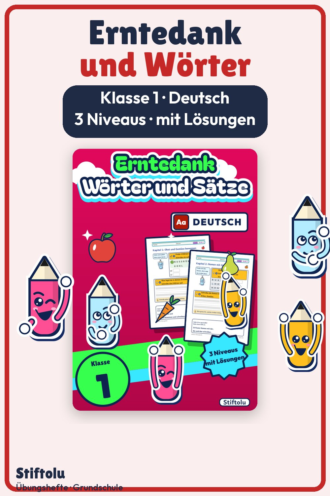
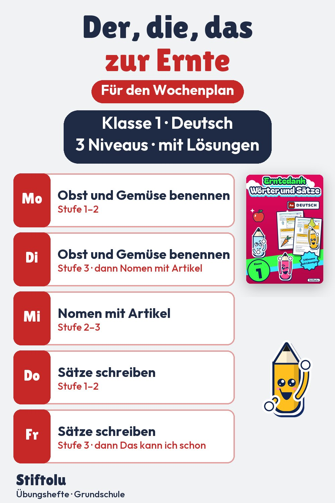

Werbung · Übungsheft von Stiftolu
Deutsch zum Erntefest: Nomen mit Artikel, Klasse 1


Im Herbst bietet das Erntefest Anlass zum Schreibenlernen. Dieses Material sammelt Wörter rund um die Ernte, übt den Artikel bei Nomen und führt bis zu kurzen Sätzen. In Förderstunde oder Wochenplan sind die Aufgaben in drei Stufen nutzbar. Samt Lösungen und Handreichung sind die 48 Seiten erhältlich auf eduki im Shop Stiftolu.